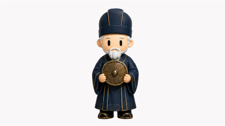

역박사가 읽은 당신의 별
심수(心宿)
화(火) × 청룡 · 상생(相生)
◆
![]()
![]()
당신과 연결된 백제 유산
◆
당신의 성향과 맞닿은 사비박사
![]()
![]()
◆
점괘 占卦
◆
◆
◆
◆
천오백 년 전, 백제의 역박사(易博士)는 주역으로
우주의 이치를 읽어 길흉화복을 헤아렸습니다.
당신의 생년월일을 일러주시면, 역박사가 동양의 별자리 28수(宿)와
오행(五行)으로 당신의 별을 읽어드립니다.
